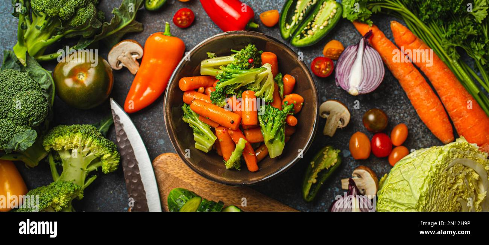
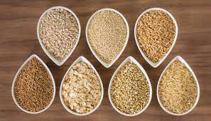
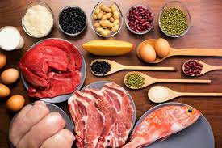
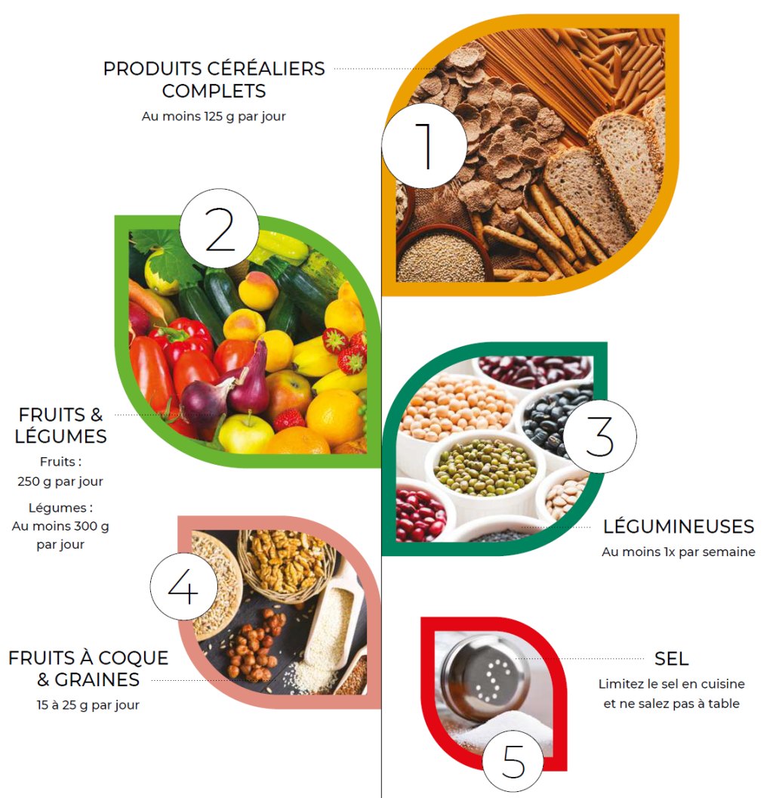
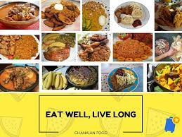

Colorful fruits like apples, oranges, and berries offer vitamins, minerals, and antioxidants crucial for overall health and immunity.
Nutrient-rich vegetables such as spinach, broccoli, and carrots provide fiber, vitamins, and minerals essential for optimal digestion and disease prevention.
Oats and quinoa, rich in fiber and B vitamins, support heart health and provide sustained energy.
Chicken, fish, beans, and nuts supply amino acids for muscle repair, aiding tissue maintenance and immune function.
Yogurt and fortified milk offer calcium and vitamin D for strong bones, contributing to overall bone health.
Follow a balanced diet with fruits, vegetables, whole grains, lean proteins, and healthy fats.
Limit added sugars, sodium, and saturated fats.
Practice portion control, moderation, and variety to meet daily nutrient needs and reduce chronic disease risk.
Create a weekly menu, a shopping list, and batch cook staples like grains and proteins.
Include a variety of colorful foods for balanced, nutrient-rich meals.
Save time and stay energized throughout the day with effective meal planning.
Try nutritious recipes like quinoa salad with veggies or grilled salmon with sweet potatoes.
Use whole, minimally processed foods, incorporating fruits, vegetables, lean proteins, and whole grains.
Experiment with herbs, spices, and cooking methods for flavorful and nutritious dishes supporting health and well-being.
